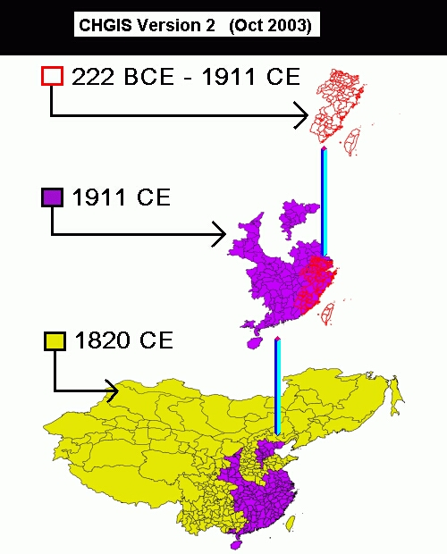

Version 2 (Published: Oct 2003)
Latest is Version 6
Publication Information:
CHGIS V2 [China Historical Geographic Information System]
(c) 2003 Harvard Yenching Institute and Fudan Center for Historical Geography.
Citation: "CHGIS, Version 2.0. Cambridge: Harvard Yenching Institute and Fudan Center for Historical Geography, Oct 2003."
License: free for academic research, no commercial use, resale, or redistribution permitted.
Distribution URL: http://dx.doi.org/10.7910/DVN/ZZKZ6U
